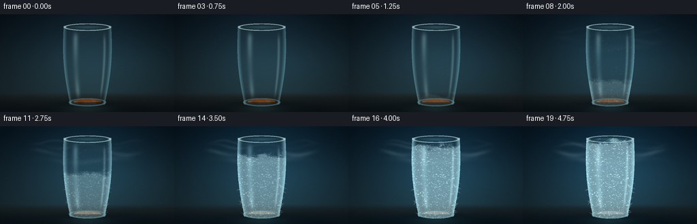
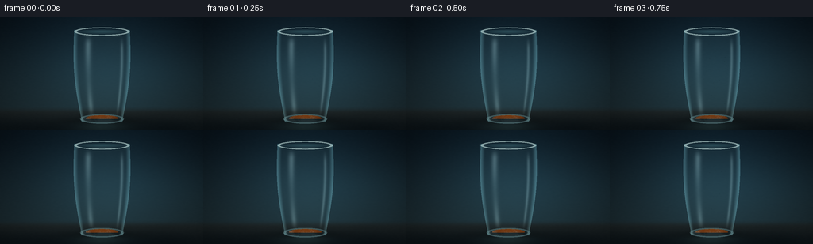

CODING AGENTS AS PIXEL WORLD MODELS
traex/DeepSeek-V4.1-Flash · phygen_095
点击播放 · 原生 RGB 像素
逐轮保存的候选
回放视频、检查图与代码变化。
每份候选均可单独播放。实际图片检查记录在下方工具轨迹中。
候选 01播放与检查图
点击播放 · 原生 RGB 像素


展开代码变化
--- 上一保存版本
+++ 本次保存版本
@@ -0,0 +1,479 @@
+"""Procedural timelapse of a glass of beer freezing in a cold studio."""
+
+from pathlib import Path
+
+import numpy as np
+from PIL import Image, ImageFilter
+
+import artifact_io
+
+
+WIDTH = 256
+HEIGHT = 144
+FRAMES = 20
+FPS = 4.0
+SUPERSAMPLE = 3
+SW = WIDTH * SUPERSAMPLE
+SH = HEIGHT * SUPERSAMPLE
+
+CX = 128.0
+TOP_Y = 16.5
+BASE_Y = 130.5
+GLASS_HEIGHT = BASE_Y - TOP_Y
+
+
+def smoothstep(edge0, edge1, value):
+ value = np.clip((value - edge0) / (edge1 - edge0), 0.0, 1.0)
+ return value * value * (3.0 - 2.0 * value)
+
+
+def mix(a, b, amount):
+ amount = np.asarray(amount, dtype=np.float32)
+ if amount.ndim == 2:
+ amount = amount[..., None]
+ return a * (1.0 - amount) + b * amount
+
+
+def glass_half_width(y):
+ s = np.clip((y - TOP_Y) / GLASS_HEIGHT, 0.0, 1.0)
+ return 35.0 - 9.2 * s + 4.4 * np.sin(np.pi * s)
+
+
+def make_noise(seed, size, blur):
+ rng = np.random.default_rng(seed)
+ raw = rng.random((size, size), dtype=np.float32)
+ image = Image.fromarray(np.uint8(raw * 255.0))
+ image = image.filter(ImageFilter.GaussianBlur(blur))
+ image = image.resize((SW, SH), Image.Resampling.BICUBIC)
+ noise = np.asarray(image, dtype=np.float32) / 255.0
+ noise -= noise.min()
+ noise /= max(float(noise.max()), 1e-6)
+ return noise
+
+
+def soft_ellipse(x, y, cx, cy, rx, ry):
+ return ((x - cx) / rx) ** 2 + ((y - cy) / ry) ** 2
+
+
+def soft_line_alpha(x, y, center_y, width):
+ return np.exp(-0.5 * ((y - center_y) / width) ** 2)
+
+
+def background(x, y, progress, cold_noise):
+ yy = np.clip(y / HEIGHT, 0.0, 1.0)
+ top = np.array([8.0, 18.0, 26.0], dtype=np.float32)
+ bottom = np.array([28.0, 43.0, 48.0], dtype=np.float32)
+ rgb = mix(top, bottom, smoothstep(0.0, 1.0, yy) ** 0.72)
+
+ halo = np.exp(
+ -(
+ ((x - 132.0) / 105.0) ** 2
+ + ((y - 56.0) / 82.0) ** 2
+ )
+ )
+ rgb += halo[..., None] * np.array([10.0, 20.0, 24.0], dtype=np.float32)
+ rgb += progress * halo[..., None] * np.array([1.0, 7.0, 12.0], dtype=np.float32)
+
+ # A low, quiet tabletop anchors the glass.
+ table = smoothstep(113.0, 122.0, y)
+ table_rgb = mix(
+ np.array([31.0, 38.0, 39.0], dtype=np.float32),
+ np.array([12.0, 20.0, 24.0], dtype=np.float32),
+ smoothstep(115.0, 143.0, y),
+ )
+ grain = (cold_noise[..., None] - 0.5) * 6.0
+ rgb = mix(rgb, table_rgb + grain, table)
+
+ # Very restrained streaks give the dark set a sense of depth.
+ streak = (
+ 0.45 * soft_line_alpha(x, y, 67.0 + 0.028 * (x - 128.0), 22.0)
+ + 0.28 * soft_line_alpha(x, y, 92.0 - 0.020 * (x - 128.0), 34.0)
+ )
+ streak *= np.exp(-((x - 190.0) / 120.0) ** 2) * (1.0 - table)
+ rgb += streak[..., None] * np.array([3.0, 8.0, 10.0], dtype=np.float32)
+
+ # Glass shadow and a cool reflected pool on the table.
+ shadow = np.exp(-(((x - 128.0) / 45.0) ** 2 + ((y - 132.0) / 5.5) ** 2))
+ rgb *= 1.0 - 0.46 * shadow[..., None]
+ pool = np.exp(-(((x - 128.0) / 31.0) ** 2 + ((y - 137.0) / 8.0) ** 2))
+ pool *= smoothstep(118.0, 129.0, y)
+ rgb += pool[..., None] * np.array([5.0, 13.0, 16.0], dtype=np.float32)
+ return rgb
+
+
+def render_frame(frame_index, noises):
+ t = frame_index / (FRAMES - 1)
+ freeze = smoothstep(0.10, 1.0, t)
+ liquid_freeze = smoothstep(0.35, 1.0, t)
+ vapor = smoothstep(0.22, 0.85, t)
+
+ x = (np.arange(SW, dtype=np.float32) + 0.5) / SUPERSAMPLE - 0.5
+ y = (np.arange(SH, dtype=np.float32) + 0.5) / SUPERSAMPLE - 0.5
+ x, y = np.meshgrid(x, y)
+
+ fine_noise = noises["fine"]
+ mid_noise = noises["mid"]
+ coarse_noise = noises["coarse"]
+ crystal_noise = noises["crystal"]
+
+ rgb = background(x, y, t, coarse_noise)
+
+ s = np.clip((y - TOP_Y) / GLASS_HEIGHT, 0.0, 1.0)
+ hw = glass_half_width(y)
+ dx = x - CX
+ u = dx / np.maximum(hw, 1.0)
+ outer = (y >= TOP_Y) & (y <= BASE_Y + 2.0) & (np.abs(dx) <= hw)
+ bottom_cap = soft_ellipse(x, y, CX, BASE_Y - 0.5, 26.8, 5.6) <= 1.0
+ outer = outer | ((y >= BASE_Y - 3.0) & bottom_cap)
+
+ inner_hw = np.maximum(hw - 1.9, 1.0)
+ inner = (y >= TOP_Y + 2.2) & (y <= BASE_Y - 1.2) & (np.abs(dx) <= inner_hw)
+ inner &= soft_ellipse(x, y, CX, BASE_Y - 2.1, inner_hw * 0.84, 4.1) <= 1.0
+
+ rim_outer = soft_ellipse(x, y, CX, TOP_Y + 2.0, 35.1, 5.5) <= 1.0
+ rim_inner = soft_ellipse(x, y, CX, TOP_Y + 2.0, 31.8, 4.2) <= 1.0
+ rim_ring = rim_outer & ~rim_inner
+
+ # A subtle cool halo is strongest near the glass and grows with the frost.
+ glass_halo = np.exp(-(((x - CX) / 52.0) ** 2 + ((y - 75.0) / 66.0) ** 2))
+ rgb += glass_halo[..., None] * (freeze * 9.0 + 2.0) * np.array(
+ [0.22, 0.65, 0.80], dtype=np.float32
+ )
+
+ # Beer surface and liquid.
+ surface_y = 39.2 + 2.0 * np.clip(np.abs(u), 0.0, 1.0) ** 1.7
+ liquid = inner & (y > surface_y)
+
+ beer_top = np.array([232.0, 157.0, 36.0], dtype=np.float32)
+ beer_bottom = np.array([102.0, 42.0, 7.0], dtype=np.float32)
+ depth = smoothstep(0.28, 1.0, np.clip((y - 36.0) / (BASE_Y - 36.0), 0.0, 1.0))
+ beer = mix(beer_top, beer_bottom, depth)
+
+ center_light = np.exp(-((u - 0.02) / 0.56) ** 2) * np.exp(
+ -((y - 72.0) / 64.0) ** 2
+ )
+ beer += center_light[..., None] * np.array([34.0, 21.0, 6.0], dtype=np.float32)
+ edge_dark = smoothstep(0.66, 1.0, np.abs(u))
+ beer *= 1.0 - 0.29 * edge_dark[..., None]
+
+ # Fine liquid texture and slowly rising carbonation.
+ liquid_texture = (fine_noise[..., None] - 0.5) * 7.0
+ beer += liquid_texture
+ bubble_layer = np.zeros((SH, SW), dtype=np.float32)
+ rng_bubbles = np.random.default_rng(91)
+ for _ in range(44):
+ bu = float(rng_bubbles.uniform(-0.78, 0.78))
+ phase = float(rng_bubbles.uniform(0.0, 1.0))
+ speed = float(rng_bubbles.uniform(0.20, 0.43))
+ by = BASE_Y - 6.0 - ((phase + speed * t * 1.9) % 1.0) * 68.0
+ bh = glass_half_width(by)
+ bx = CX + bu * bh
+ radius = float(rng_bubbles.uniform(0.32, 0.78))
+ bubble = np.exp(
+ -(
+ ((x - bx) / (radius + 0.18)) ** 2
+ + ((y - by) / (radius * 0.80 + 0.15)) ** 2
+ )
+ * 2.0
+ )
+ bubble_layer = np.maximum(bubble_layer, bubble)
+ bubble_layer *= liquid * (1.0 - 0.55 * liquid_freeze)
+ beer += bubble_layer[..., None] * np.array([38.0, 37.0, 23.0], dtype=np.float32)
+
+ # Frozen slush gathers from the bottom and reaches into the amber body.
+ ice_front = BASE_Y - liquid_freeze * 72.0
+ ice_irregular = (mid_noise - 0.5) * 22.0 + (crystal_noise - 0.5) * 6.0
+ ice_front_mask = smoothstep(ice_front - 4.0, ice_front + 7.0, y + ice_irregular)
+ ice_side = smoothstep(0.68, 0.96, np.abs(u)) * liquid_freeze
+ ice_patch_noise = smoothstep(0.48, 0.79, coarse_noise + 0.14 * (1.0 - s))
+ ice_mask = liquid * np.clip(
+ ice_front_mask * (0.72 + 0.35 * ice_patch_noise)
+ + ice_side * ice_patch_noise * 0.68,
+ 0.0,
+ 1.0,
+ )
+ ice_color = np.array([177.0, 216.0, 222.0], dtype=np.float32)
+ ice_color = ice_color + (crystal_noise[..., None] - 0.5) * 34.0
+ beer = mix(beer, ice_color, ice_mask * (0.30 + 0.34 * liquid_freeze))
+ beer += (crystal_noise[..., None] - 0.53) * ice_mask[..., None] * 28.0
+
+ rgb = mix(rgb, beer, liquid.astype(np.float32))
+
+ # Dense, creamy head with a softly irregular crown.
+ foam_radius = (
+ ((x - CX) / 30.2) ** 2
+ + ((y - 38.4) / 10.9) ** 2
+ + (fine_noise - 0.5) * 0.14
+ )
+ foam = inner & (foam_radius < 1.0) & (y > 27.0)
+ foam_color = np.array([244.0, 229.0, 187.0], dtype=np.float32)
+ foam_shade = smoothstep(0.0, 1.0, np.clip((y - 29.0) / 19.0, 0.0, 1.0))
+ foam_color = mix(
+ np.array([251.0, 239.0, 205.0], dtype=np.float32),
+ np.array([193.0, 164.0, 112.0], dtype=np.float32),
+ foam_shade * 0.55,
+ )
+ foam_color = foam_color + (fine_noise[..., None] - 0.5) * 12.0
+ foam_frost = freeze * smoothstep(0.42, 0.90, coarse_noise + 0.18 * freeze)
+ foam_color = mix(foam_color, np.array([213.0, 232.0, 232.0]), foam_frost * 0.62)
+ rgb = mix(rgb, foam_color, foam.astype(np.float32))
+
+ # Small foam cells catch light, especially before they freeze.
+ foam_cells = np.zeros((SH, SW), dtype=np.float32)
+ rng_foam = np.random.default_rng(43)
+ for _ in range(54):
+ fu = float(rng_foam.uniform(-0.82, 0.82))
+ fv = float(rng_foam.uniform(0.0, 1.0))
+ fy = 29.0 + fv * 18.0
+ fh = glass_half_width(fy)
+ fx = CX + fu * min(fh * 0.75, 28.0)
+ radius = float(rng_foam.uniform(0.35, 1.15))
+ cell = np.exp(
+ -(
+ ((x - fx) / (radius + 0.18)) ** 2
+ + ((y - fy) / (radius * 0.72 + 0.14)) ** 2
+ )
+ * 2.2
+ )
+ foam_cells = np.maximum(foam_cells, cell)
+ foam_cells *= foam * (1.0 - 0.50 * foam_frost)
+ rgb += foam_cells[..., None] * np.array([28.0, 25.0, 16.0], dtype=np.float32)
+
+ # The liquid meniscus sits just below the head.
+ meniscus = np.exp(
+ -(((x - CX) / 28.0) ** 2 + ((y - 49.0) / 1.1) ** 2)
+ )
+ meniscus *= liquid.astype(np.float32)
+ rgb += meniscus[..., None] * np.array([28.0, 15.0, 3.0], dtype=np.float32)
+
+ # Condensation beads appear on the cool glass and swell over time.
+ droplet_rgb = np.zeros_like(rgb)
+ droplet_alpha = np.zeros((SH, SW), dtype=np.float32)
+ rng_drops = np.random.default_rng(27)
+ drops = []
+ for _ in range(105):
+ drops.append(
+ (
+ float(rng_drops.uniform(-0.93, 0.93)),
+ float(rng_drops.uniform(0.12, 0.97)),
+ float(rng_drops.uniform(0.23, 0.95)),
+ float(rng_drops.uniform(0.0, 1.0)),
+ )
+ )
+ for du, dv, radius, phase in drops:
+ visible = smoothstep(0.04 + 0.16 * phase, 0.30 + 0.16 * phase, t)
+ if visible <= 0.0:
+ continue
+ dy = TOP_Y + dv * GLASS_HEIGHT
+ dhw = glass_half_width(dy)
+ dxpos = CX + du * (dhw - 1.8)
+ rr = radius * (0.72 + 0.62 * smoothstep(0.0, 0.8, t))
+ x0 = max(int((dxpos - rr - 1.5) * SUPERSAMPLE), 0)
+ x1 = min(int((dxpos + rr + 1.5) * SUPERSAMPLE) + 1, SW)
+ y0 = max(int((dy - rr - 1.7) * SUPERSAMPLE), 0)
+ y1 = min(int((dy + rr + 1.7) * SUPERSAMPLE) + 1, SH)
+ if x0 >= x1 or y0 >= y1:
+ continue
+ xx = x[y0:y1, x0:x1]
+ yy = y[y0:y1, x0:x1]
+ bead = np.exp(
+ -(
+ ((xx - dxpos) / (rr + 0.10)) ** 2
+ + ((yy - dy) / (rr * 0.92 + 0.10)) ** 2
+ )
+ * 2.6
+ )
+ glint = np.exp(
+ -(
+ ((xx - (dxpos - rr * 0.24)) / (rr * 0.34 + 0.05)) ** 2
+ + ((yy - (dy - rr * 0.30)) / (rr * 0.25 + 0.05)) ** 2
+ )
+ )
+ shadow = np.exp(
+ -(
+ ((xx - dxpos) / (rr * 0.95 + 0.08)) ** 2
+ + ((yy - (dy + rr * 0.52)) / (rr * 0.30 + 0.05)) ** 2
+ )
+ * 2.0
+ )
+ region = np.s_[y0:y1, x0:x1]
+ droplet_alpha[region] = np.maximum(
+ droplet_alpha[region], bead * (0.13 + 0.16 * visible)
+ )
+ bead_rgb = (
+ np.array([137.0, 183.0, 191.0], dtype=np.float32) * bead[..., None]
+ + np.array([235.0, 248.0, 247.0], dtype=np.float32)
+ * glint[..., None]
+ * 0.62
+ - np.array([8.0, 13.0, 13.0], dtype=np.float32) * shadow[..., None]
+ )
+ droplet_rgb[region] += bead_rgb * visible
+ droplet_alpha *= outer.astype(np.float32)
+ droplet_rgb *= outer[..., None]
+ rgb = mix(rgb, droplet_rgb, droplet_alpha)
+
+ # A rising, irregular rime front makes the temperature drop legible.
+ frost_height = smoothstep(0.12, 0.98, t)
+ frost_front = BASE_Y - 4.0 - frost_height * 105.0
+ front_wobble = (mid_noise - 0.5) * 16.0 + (crystal_noise - 0.5) * 5.0
+ bottom_frost = smoothstep(frost_front - 3.0, frost_front + 6.0, y + front_wobble)
+ edge_frost = smoothstep(0.75, 0.99, np.abs(u)) * smoothstep(0.05, 0.70, t)
+ frost_strength = np.clip(
+ bottom_frost * (0.55 + 0.45 * frost_height) + edge_frost * 0.64,
+ 0.0,
+ 1.0,
+ )
+ frost_strength *= outer.astype(np.float32)
+ frost_color = np.array([183.0, 219.0, 226.0], dtype=np.float32)
+ frost_color = frost_color + (crystal_noise[..., None] - 0.5) * 25.0
+ frost_alpha = frost_strength * (0.16 + 0.46 * freeze)
+ rgb = mix(rgb, frost_color, frost_alpha)
+
+ # Fine crystalline facets sit on top of the milky rime.
+ frost_glint = smoothstep(0.69, 0.86, crystal_noise) * frost_strength * freeze
+ rgb += frost_glint[..., None] * np.array([72.0, 76.0, 72.0], dtype=np.float32)
+
+ # Clear glass body: cool tint, edge light, and two soft vertical reflections.
+ glass_tint = np.array([109.0, 159.0, 166.0], dtype=np.float32)
+ rgb = mix(rgb, glass_tint, outer.astype(np.float32) * 0.055)
+
+ edge_light = smoothstep(0.82, 1.0, np.abs(u)) * outer.astype(np.float32)
+ rgb += edge_light[..., None] * np.array([34.0, 52.0, 54.0], dtype=np.float32)
+
+ left_highlight = np.exp(-((u + 0.49) / 0.105) ** 2)
+ left_highlight *= smoothstep(0.04, 0.17, s) * (1.0 - smoothstep(0.82, 0.98, s))
+ left_highlight *= 0.68 + 0.32 * np.cos((y - 31.0) * 0.065)
+ right_highlight = np.exp(-((u - 0.70) / 0.050) ** 2)
+ right_highlight *= smoothstep(0.06, 0.22, s) * (1.0 - smoothstep(0.78, 0.98, s))
+ highlight = np.clip(left_highlight * 0.23 + right_highlight * 0.18, 0.0, 0.42)
+ highlight *= outer.astype(np.float32)
+ rgb += highlight[..., None] * np.array([201.0, 231.0, 228.0], dtype=np.float32)
+
+ # Rim and base rings are the brightest glass cues.
+ rim_alpha = rim_ring.astype(np.float32) * 0.64
+ rim_color = np.array([205.0, 234.0, 231.0], dtype=np.float32)
+ rim_color = rim_color + (fine_noise[..., None] - 0.5) * 15.0
+ rgb = mix(rgb, rim_color, rim_alpha)
+ rim_inner_glow = np.exp(
+ -(
+ ((x - CX) / 31.2) ** 2
+ + ((y - (TOP_Y + 2.0)) / 3.0) ** 2
+ )
+ * 1.7
+ )
+ rim_inner_glow *= (soft_ellipse(x, y, CX, TOP_Y + 2.0, 35.0, 6.0) <= 1.15)
+ rgb += rim_inner_glow[..., None] * np.array([21.0, 33.0, 33.0], dtype=np.float32)
+
+ base_ring = (
+ (soft_ellipse(x, y, CX, BASE_Y - 1.4, 27.7, 6.1) <= 1.0)
+ & (soft_ellipse(x, y, CX, BASE_Y - 1.4, 24.2, 4.5) > 1.0)
+ )
+ rgb = mix(
+ rgb,
+ np.array([126.0, 171.0, 174.0], dtype=np.float32),
+ base_ring.astype(np.float32) * 0.38,
+ )
+
+ # Reflected glass on the tabletop.
+ reflection_strength = np.exp(
+ -(((x - CX) / 29.0) ** 2 + ((y - 139.0) / 8.5) ** 2)
+ )
+ reflection_strength *= (y > 127.0) * (1.0 - outer.astype(np.float32))
+ reflection_color = np.array([91.0, 91.0, 60.0], dtype=np.float32)
+ reflection_color = mix(
+ reflection_color,
+ np.array([68.0, 116.0, 121.0], dtype=np.float32),
+ freeze * 0.62,
+ )
+ rgb += reflection_strength[..., None] * reflection_color * 0.12
+
+ # Frost needles at the foot of the glass sharpen the icy read.
+ if freeze > 0.18:
+ needle_rgb = np.zeros_like(rgb)
+ needle_alpha = np.zeros((SH, SW), dtype=np.float32)
+ rng_needles = np.random.default_rng(133)
+ for _ in range(30):
+ side = -1.0 if rng_needles.random() < 0.5 else 1.0
+ ny = float(rng_needles.uniform(82.0, 129.0))
+ nhw = glass_half_width(ny)
+ nx = CX + side * (nhw - float(rng_needles.uniform(0.2, 2.3)))
+ length = float(rng_needles.uniform(2.5, 8.5)) * smoothstep(0.18, 0.72, freeze)
+ width = float(rng_needles.uniform(0.32, 0.78))
+ angle = float(rng_needles.uniform(-0.85, 0.85))
+ tipx = nx + side * length * np.cos(angle)
+ tipy = ny + length * np.sin(angle)
+ t0 = np.clip(
+ ((x - nx) * (tipx - nx) + (y - ny) * (tipy - ny))
+ / max((tipx - nx) ** 2 + (tipy - ny) ** 2, 1e-5),
+ 0.0,
+ 1.0,
+ )
+ px = nx + t0 * (tipx - nx)
+ py = ny + t0 * (tipy - ny)
+ line = np.exp(
+ -(((x - px) ** 2 + (y - py) ** 2) / (width**2))
+ * 1.9
+ )
+ line *= smoothstep(1.0, 0.20, t0)
+ needle_alpha = np.maximum(needle_alpha, line * 0.44 * freeze)
+ needle_rgb[:] = np.array([218.0, 238.0, 240.0], dtype=np.float32)
+ rgb = mix(rgb, needle_rgb, needle_alpha)
+
+ # Cold vapor: a few transparent wisps drift over the rim and down the glass.
+ vapor_layer = np.zeros((SH, SW), dtype=np.float32)
+ if vapor > 0.0:
+ for i, (base, amp, freq, speed, width) in enumerate(
+ [
+ (23.0, 2.7, 0.105, 0.75, 1.45),
+ (29.0, 3.5, 0.082, -0.53, 1.75),
+ (38.0, 4.0, 0.068, 0.34, 2.30),
+ (50.0, 3.2, 0.052, -0.24, 2.75),
+ ]
+ ):
+ phase = t * speed * 8.0 + i * 1.17
+ center = base + amp * np.sin((x - CX) * freq + phase)
+ band = np.exp(-0.5 * ((y - center) / width) ** 2)
+ horizontal_window = smoothstep(38.0, 66.0, x) * (
+ 1.0 - smoothstep(187.0, 219.0, x)
+ )
+ drift = 0.56 + 0.44 * np.sin((x - CX) * 0.045 - phase * 0.70 + i)
+ vapor_layer += band * horizontal_window * drift * (0.10 + 0.04 * i)
+ vapor_layer *= vapor * (1.0 - 0.56 * outer.astype(np.float32))
+ vapor_layer = np.clip(vapor_layer, 0.0, 0.27)
+ vapor_color = np.array([168.0, 203.0, 211.0], dtype=np.float32)
+ rgb = mix(rgb, vapor_color, vapor_layer)
+
+ # Final cold color grade, vignette, and restrained sensor grain.
+ rgb += freeze * np.array([-3.0, 3.0, 7.0], dtype=np.float32)
+ nx = (x - WIDTH * 0.5) / (WIDTH * 0.5)
+ ny = (y - HEIGHT * 0.5) / (HEIGHT * 0.5)
+ vignette = np.clip(1.0 - 0.18 * (nx**2 + 0.62 * ny**2), 0.72, 1.0)
+ rgb *= vignette[..., None]
+ grain = (fine_noise - 0.5) * 2.8
+ rgb += grain[..., None]
+
+ rgb = np.clip(rgb, 0.0, 255.0).astype(np.uint8)
+ image = Image.fromarray(rgb).resize((WIDTH, HEIGHT), Image.Resampling.LANCZOS)
+ return np.asarray(image, dtype=np.uint8)
+
+
+def main():
+ case_dir = Path(__file__).resolve().parent
+ noises = {
+ "fine": make_noise(11, 384, 1.1),
+ "mid": make_noise(29, 160, 2.0),
+ "coarse": make_noise(71, 72, 4.0),
+ "crystal": make_noise(97, 256, 0.55),
+ }
+ frames = []
+ for frame_index in range(FRAMES):
+ frame = render_frame(frame_index, noises)
+ frames.append(frame)
+ print(f"rendered frame {frame_index + 1:02d}/{FRAMES}", flush=True)
+ frames = np.stack(frames)
+ artifact_io.save(frames, case_dir)
+ print(f"saved {FRAMES} RGB frames at {WIDTH}x{HEIGHT}, {FPS:g} fps")
+
+
+if __name__ == "__main__":
+ main()
可观测工具轨迹
实际执行的命令与返回图片。
命令 1exit 0
/bin/bash -c "pwd && rg --files -g '"'!*'"' -g '*' | sed -n '1,120p'"
命令 2exit 0
/bin/bash -c "printf '%s\\n' '--- prompt.txt ---'; sed -n '1,240p' prompt.txt; printf '%s\\n' '--- GENERATION_RULES.md ---'; sed -n '1,280p' GENERATION_RULES.md; printf '%s\\n' '--- task_spec.json ---'; sed -n '1,280p' task_spec.json"
命令 3exit 0
/bin/bash -c "find . -maxdepth 2 -type f -printf '%p %s bytes\\n' | sort | sed -n '1,160p'; printf '%s\\n' '--- tools ---'; command -v ffmpeg || true; command -v blender || true; command -v python3 || true; command -v node || true"
命令 4exit 0
/bin/bash -c "sed -n '1,260p' artifact_io.py"
命令 5exit 0
/bin/bash -c "sed -n '1,260p' player_template.html"
命令 6exit 0
/bin/bash -c "python3 - <<'PY'
mods=['numpy','PIL','imageio','cv2','matplotlib','scipy']
for m in mods:
try:
mod=__import__(m)
print(m, getattr(mod,'__version__','ok'))
except Exception as e:
print(m, 'MISSING', e)
PY"命令 7exit 1
/bin/bash -c 'MPLCONFIGDIR=.tmp/mpl python3 generate.py'
命令 8exit 0
/bin/bash -c "rg -n '"'^[[:space:]]*[a-zA-Z_][a-zA-Z0-9_]* '"\\+=|"'^[[:space:]]*[a-zA-Z_][a-zA-Z0-9_]* '"\\*=|= np\\.array' generate.py | sed -n '1,220p'"
命令 9exit 1
/bin/bash -c 'MPLCONFIGDIR=.tmp/mpl python3 generate.py'
命令 10exit 0
/bin/bash -c 'MPLCONFIGDIR=.tmp/mpl python3 generate.py'
命令 11exit 0
/bin/bash -c "python3 - <<'PY'
from PIL import Image
import numpy as np, json
from pathlib import Path
p=Path('.')
frames=[]
for f in sorted((p/'frames').glob('*.png')):
im=Image.open(f).convert('RGB'); a=np.asarray(im)
frames.append(a)
print(f.name, im.size, 'mean', np.round(a.mean((0,1)),1).tolist(), 'std', round(float(a.std()),1), 'minmax', int(a.min()), int(a.max()))
a=np.stack(frames)
print('shape', a.shape, 'dtype', a.dtype)
print('interframe mean abs delta', round(float(np.abs(a[1:].astype(np.int16)-a[:-1].astype(np.int16)).mean()),2))
z=np.load('pixels.npz')
print('pixels.npz', z['pixels'].shape, z['pixels'].dtype, 'compressed', (p/'pixels.npz').stat().st_size)
print('index.html', (p/'index.html').stat().st_size, 'inspection', Image.open('inspection.png').size, 'transition', Image.open('transition_check.png').size)
PY"保存候选 1 份；完成命令 11 次；可验证图片返回 0 张。原始 API 响应与完整日志保留在本地。